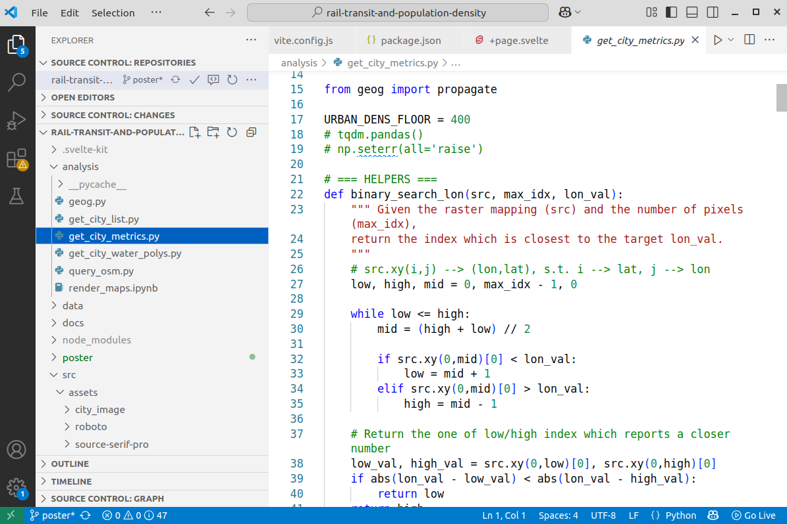
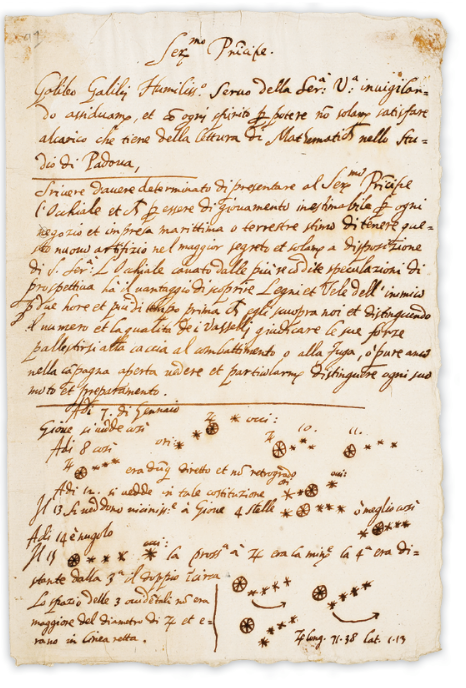
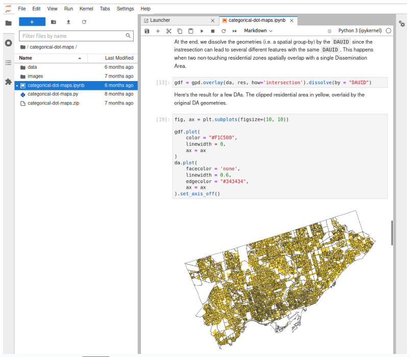

# Assign a value to a variable
name = "Alice"
age = 30Programming with Python and computational notebooks
Coding, or computer programming, is the act of giving a computer written instructions for a task or set of tasks. According to Wikipedia, it “involves designing and implementing algorithms, step-by-step specifications of procedures, by writing code in one or more programming languages.”
Programming languages, just like Python and R and JavaScript can be thought of similarly to languages that people speak and write, like Spanish or Arabic – each language has its own set of rules and different syntax, but (most) ideas can be translated from one language to another. Instead of using language to communicate with other people, you write code to give directions to a computer. In data analysis, these directions could be to summarize data in a table, create a chart or a map, or generate a statistical model, for example.
Why learn programming?
Learning programming gives you more flexibility and control when working with urban and spatial data. It helps you handle larger datasets, repeat analyses efficiently, and create custom maps or tools that aren’t possible point-and-click software like Excel and GIS. It’s a practical skill that can really open up what you’re able to do in this field.
Why learn Python?
Python is widely used programming language, especially in urban and spatial analysis because it’s easy to learn relative to other languages and has a strong ecosystem of libraries for working with data, maps, and models. Plus, it’s open source and has a huge community, which means lots of learning resources and support.
This notebook introduces the Python programming language and Jupyter notebooks. It will cover:
- A brief overview of programming, Python, integrated development environments (IDEs), and computational notebooks
- How to run a Python (
.py) script in the terminal - How to run code using Jupyter Notebook (
.ipynb) in Visual Studio Code - The basics of coding in Python, including:
- Variables
- Simple math
- Lists and dictionaries
- If statements
- For and while loops
- Functions
While we’ll mostly be looking at Python, the same concepts are applicable across many other languages and software.
How does Python work?
When you write something in English or another language, you need to choose an environment to write in. For example, if you’re writing an email, you might use Gmail or Outlook. If you’re writing a report, you might use Google Docs or Microsoft Word. Or maybe you prefer writing on parchment with a quill pen!
Python is a programming language that lets you write instructions in a plain text file, often called a script, which the Python interpreter on your computer reads and runs line by line. You don’t need to compile your code like in some other languages—just write it, save it as a .py file, and run it directly.
For example, I have a file on my computer called my-script.py, a very simple script which simply prints “Hello, world!”
print("Hello, world!")When running this code in your command line should result in something like the following.
your-computer-name:~$ python my-script.py
Hello, world!The command line is often referred to as the shell, terminal, console, prompt or various other names.
If you are new to this, check out this tutorial for more in-depth instructions on command line Python
Tools for writing code
When coding, you also have to choose an environment to write in. This is typically called a “code editor” or “integrated development environment” (IDE). The simplest editor would simply be the notepad or text editor on your computer. But there are many IDEs to choose from that make coding much easier, Some of the most popular ones for Python are Visual Studio Code (“VS Code”) and PyCharm.
A main benefit for using a code editor is that it highlights different parts of your code in different colours or styles making it much easier to read.

Computational notebooks
There are many different ways to execute code, or tell the computer to perform the instructions you’ve written. If you write your code in a file that’s saved with the .py file extension, you can run it all at once, and the computer will follow all of your instructions, one line at a time. This works well for scripts that are complete and do not need to be run in separate chunks.
If you are exploring, analyzing, or visualizing data, it is sometimes easier to work in a computational notebook. Computational notebooks are coding environments that not only allow you to write code, but also let you write explanations and show the outputs of your analysis, very similar to pre-digital formats.

Jupyter Notebooks (named after Galileo’s work!) are often used for data analysis in Python. When using a Jupyter Notebook, you can run code chunk-by-chunk and see the output right below each chunk. For example, you can write a chunk of code that manipulates a dataframe and then look at the first few rows of the dataframe right below the code. The page you are reading now was written in a Jupyter notebook! :)

You can run Jupyter Notebooks in VS Code via the Jupyter Notebook “extension”. You can also work with notebooks via Jupyter Lab (a web-based environment for Jupyter Notebooks) or Sublime Text.
To get started in VS Code, you can follow these instructions. To create a notebook, you just need to create a file with the .ipynb extension in whichever directory you want to save it in. To write and run code in the notebook, you will use “cells” that contain chunks of information.
When you run an individual cell, you are telling the computer to follow the instructions you’ve provided in only that cell, ignoring any other cells that are in the notebook. Be careful of the order in which you “execute” the cells. For example, if you run cell B before running cell A, it doesn’t matter if cell B is located below cell A – the computer will still follow the instructions in B first and A second.
Python basics
Now that you have Jupyter Notebook set up, let’s code! Below, we’ll cover some of the basic building blocks of Python.
Open up a fresh .ipynb file and you can get started building bits of code for each of the topics below
Variables
A variable is like a labeled entity that stores information (numbers, text, etc.). You can create a variable, give it a name, and assign it a value.
Note that in the below code, some of the lines are written with a # at the beginning - these are comments. Putting a # in front of a line of code tells the computer not to execute it. You should use comments often to explain what your code is doing, either for someone else who might need to understand it or for your future self.
In the above cell, we created two variables, one called name and another called age. The name variable is a string because it is a sequence of characters. The computer knows this is a string because we enclosed the text, Alice, in quotes. Single or double quotes both work here.
The age variable is an integer because it is a numeric value without decimals. You can see the data type with type([name of object]) like below:
type(age)intIf we print the variable, it will show us the variable’s value:
print(age)30We can also re-assign variables, which will change their value. Now when we print the value of age, it will show 31 instead of 30:
# Re-assign `age` variable with a new value
age = 31
print(age)31Remember that the computer interprets your code in the order you run the cells, not in the order of the cells in the notebook. For example, if you ran the above cell that assigns a value of 31 to the age variable before running the cell that assigns the value of 30 to age, the computer would store the value of 31.
Simple math
Python can do simple math, like a calculator:
4 + 3710/33.3333333333333335You can also use the math module to access more advanced functions, like taking the square root. To use this module, you have to import it first:
import math # import module
math.sqrt(25)5.0Lists
A list is a collection of elements which can be accessed by their position. Python uses something called zero-based indexing, which means the first element of a sequence has an index (position) of 0 instead of 1.
In the below example, fruits is a variable whose type is a list.
# Assign list to variable called 'fruits'
fruits = ["apple", "banana", "cherry"]
type(fruits)list# Access first item in list
print(fruits[0])apple# Access second item in list
print(fruits[1])bananaItems can be appended to lists:
# Add "orange" to the list
fruits.append("orange")
print(fruits)['apple', 'banana', 'cherry', 'orange']We can check the length of the new list to see how many elements it has:
len(fruits)4Learn more about lists here.
Dictionaries
A dictionary is a type of object that stores information in pairs: each “entry” in the dictionary has both a key and a value. In the example below, person is a dictionary that contains characteristics – specifically the name and age – of a person.
person = {"name": "Alice", "age": 30}We can access the value associated with the name of the person:
print(person["name"])AliceWe can also add a new key-value pair to the dictionary that represents, in this case, the person’s job:
person["job"] = "Engineer"
print(person){'name': 'Alice', 'age': 30, 'job': 'Engineer'}Learn more about dictionaries here.
If statements
If statements let your code make decisions. You check a condition (e.g., whether age >= 18), and run different code depending on whether it’s true or false.
age = 18
if age >= 18:
print("You're an adult!")
else:
print("You're a minor.")You're an adult!Learn more about if statements here.
For loops
A for loop repeats code for each item in a list or range. For example:
for fruit in ["apple", "banana", "cherry"]:
print(fruit)apple
banana
cherryLearn more about for loops here.
While loops
A while loop repeats code as long as a condition is true. In the below example, we start with 0 and keep adding 1 until we get to 3, after which we stop counting:
count = 0
while count <= 3:
print("Counting:", count)
count += 1Counting: 0
Counting: 1
Counting: 2
Counting: 3Learn more about while loops here.
Functions
A function is a reusable block of code that performs a task. You “define” it (write the code that performs the task) once and “call” it (run that pre-defined code) whenever you want. In the below example, we define the function greet so that when it is called, it prints “Hello, [name]!” where name is an argument (also known as a parameter) that’s passed into the function.
# Define the function
def greet(name):
print(f"Hello, {name}!")
# Call the function
greet("Alice")Hello, Alice!Not all functions need arguments. For example:
# Define the function
def howdy():
print("Howdy!")
# Call the function
howdy()Howdy!Some functions have more than one argument. For example:
# Define the function
def add_numbers(a, b):
c = a + b
print(c)
# Call the function
add_numbers(8, 7)15While all of the example functions listed above result in something being printed out, most functions do more than that. For example, a single function can filter a dataset based on a set of values, manipulate the resulting dataset, and create a plot.
Learn more about functions here.
Libraries
Libraries are collections of related functions that do things like analyze data, draw charts, or work with maps.
Many libraries like math for a variety of mathematical operations, os for interacting with files on your computer, and random for generating random numbers, typically come automatically installed with Python.
There are many popular freely available libraries available—like pandas for working with data tables, matplotlib for plotting, and geopandas for spatial data—that can help you do a lot with just a few lines of code.
To include functions that are part of a library, we use import at the top of our script. For example, lets import a function for a random number generator, and use it create our own d20 dice rolling function.
import random
# Function to roll a 20-sided dice
def roll_d20():
return random.randint(1, 20)
# Simulate rolling the dice
roll = roll_d20()
print(roll)14When using external libraries like pandas, we need to install the library before we can import and then use it. In Jupyter Notebook, we can do this by running !pip install [name of library]. If you are running Python in your command line, you can simply run pip install [name of library]
If you don’t already have pip installed on your computer, follow these instructions. If you’re still having trouble, try Googling your specific questions or asking a chatbot for step-by-step instructions!